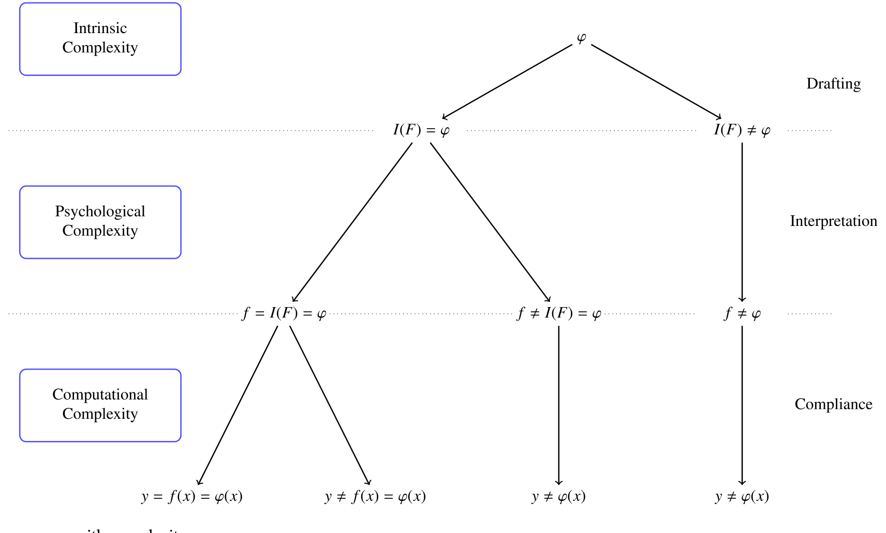
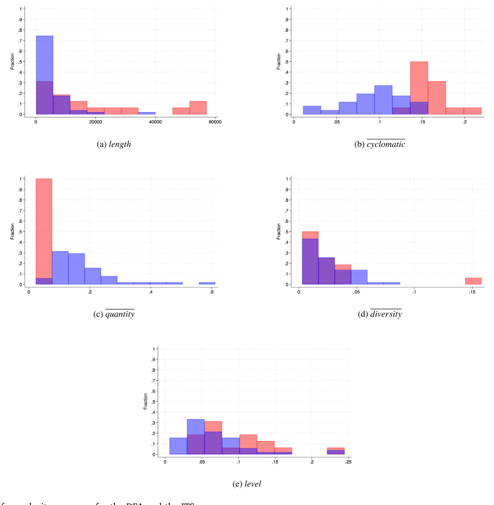
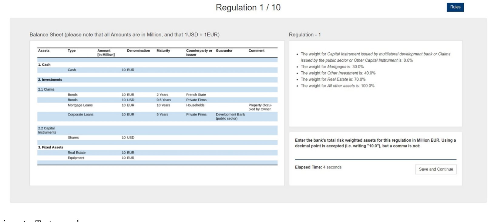
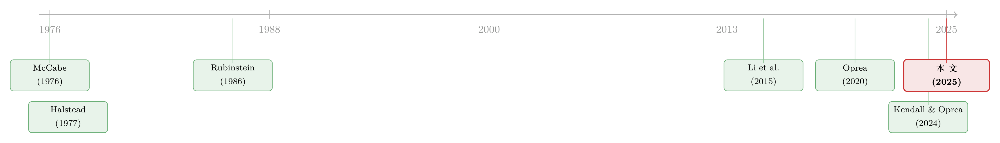

把监管写成一段代码：当「复杂」第一次有了可以测量的刻度
本文读的是 Colliard & Georg (2025, Journal of Financial Economics)：作者把一部监管当成一段「算法」，借用计算机科学里 Halstead 的「操作符 / 操作数」框架，造出五把度量监管复杂度的尺子，再用一场在线实验和欧洲银行管理局 (EBA) 的合规成本调查去检验它们。结论是——在「文本长度」之外，真正能解释错误率、答题时间与合规成本的，只有两把尺子：quantity（监管操作符的数量）与 potential（独特操作数的数量）。长度是个好用的「总代理」，却几乎不是复杂度的真正驱动力。
1 引言：一个谁都在抱怨、却没人能称重的东西
金融危机之后，几乎所有人都在抱怨一件事：监管太复杂了。英格兰银行的 Haldane 与 Madouros（2012）甚至直言，银行资本监管已经复杂到「适得其反」的地步，复杂本身反而成了监管套利的温床。巴塞尔委员会自己也承认（Basel Committee on Banking Supervision, 2013），在监管的「简单」与「精确」之间，存在一个绕不开的权衡。美国那边的反应更直接——干脆把一批小银行从 2010 年《多德-弗兰克法案》(Dodd–Frank Act, DFA) 的若干条款里豁免出去。
可问题是：当所有人都在说「太复杂」的时候，到底什么是「复杂」？
这正是一件尴尬的事。我们对复杂度的讨论铺天盖地，但「监管复杂度」(regulatory complexity) 始终是一个滑不溜手的概念。你说它复杂，是因为它要管的事情太多？还是因为条文写得太绕、读者读不懂？又或者，是因为真要照着它去算一遍、合规成本高得吓人？——这三件事，显然不是一回事。可在过去的文献里，它们常常被搅在一起，最后只剩下一个粗暴的代理变量：数页数、数字数。法规越长，就越复杂。
这种「以长度论复杂」的做法并非一无是处。本文最后会告诉你，长度确实和几乎所有结果变量都正相关——它是一个诚实的「总代理」。但把长度当成复杂度本身，就像用一个人的体重去判断他健不健康：相关，却远不是病因。
于是，一个自然的问题是：能不能造一把（或几把）尺子，把监管的复杂度从它的「后果」里剥离出来，直接从文本本身量出它的「成因」？这就是 Colliard 和 Georg 这篇论文要做的事。而他们切入的角度，出人意料地优雅——把一部监管，当成一段代码来读。
（关于「从文本里数出一个抽象概念」这条路数，本博客此前评述过一篇把股市波动从报纸里拆成四十个类别的工作，可参见《报纸是怎么「数」出股市恐慌的》。）
2 把监管当成一段代码：核心类比
作者的工作假设 (working hypothesis) 只有一句话：一部监管，就是一段算法。
什么意思？一段算法，是一串指令，它接收某个输入，对输入施加一系列操作，最后吐出一个结果。把这句话翻译到监管的语境里——监管接收一个「经济实体」（比如一家银行的资产负债表）作为输入，对它施加一系列规则，最后吐出一个「监管动作」（比如它该计提多少资本）。监管文本，就像描述这段算法的源代码；而把监管套用到某家具体银行身上，就像在一台计算机上执行这段程序。
这个类比并不是作者的发明。在他们之前，Li et al.（2015）那篇标题就叫「Law is code」的论文，已经把美国法典当成软件工程的对象来分析了。但作者走得更远：他们不满足于把法律「类比成」代码，而是要用这套类比，去区分复杂度的不同维度，并由此严格地推导出五把度量尺。
要理解这五把尺子从哪来，得先看清楚：在「写法规 → 读法规 → 用法规」这条流水线上，错误到底会在哪一步发生。
3 模型：错误发生在哪一步
这是本文的理论骨架，值得一步步讲清楚。
设定。 经济处在一个可观测的状态 \(\tilde x \in X\)，\(X\) 是有限集，状态 \(x\) 出现的概率记为 \(\nu(x)=\Pr(\tilde x = x)\)。在每个状态下，监管者从有限集 \(Y\) 里选一个监管工具 \(y\)。于是产生一个经济结果 \(\tilde z \in Z\)，它的分布取决于状态和监管工具：\(\mu(z,x,y)=\Pr(\tilde z = z\mid x,y)\)。监管者对结果有偏好，用效用函数 \(U\) 表示。
作者把监管定义为一个从状态集到工具集的函数 \(\varphi: X \to Y\)。在银行资本监管的例子里，\(x\) 是某家银行资产负债表的状态，\(y\) 是它面对的资本要求，而「一部资本监管」就是一套规则——它告诉你任何一张资产负债表对应多高的资本要求。
在一个标准的经济模型里，事情到这儿就该结束了：你只要把 \(\varphi\) 解成下面这个最大化问题的最优解就行。
但真正关键的一步在于：作者说，光有 \(\varphi\) 还不够。因为在现实里，把规则写下来、再照着执行，这个过程本身是有成本、且会出错的。 一部监管 \(\varphi\)（一个函数）和描述它的监管文本 \(F\)（一串词），是两回事。于是整条流水线被拆成三步，每一步都可能出岔子：
第一步，起草 (drafting)。 监管者起草一份文本 \(F\) 来描述 \(\varphi\)。但起草会出错，所以文本 \(\tilde F\) 是随机的，其分布取决于监管 \(\varphi\)、起草者的类型 \(\theta\)（比如水平）和起草的努力 \(e\)：
$$\Pr(\tilde F = F) = \mu_D(F,\varphi,\theta,e) \tag{2}$$
第二步，解释 (interpretation)。 一个经济主体（比如合规官）必须读懂文本 \(F\)，把它解释成一个函数 \(\tilde f \in \Phi\)。文本「本来应该」对应的那个正确解释记为 \(I(F)\)。但人会读错，所以解释也是随机的：
$$\Pr(\tilde f = f) = \mu_I(f,F,\theta,e) \tag{3}$$
第三步，执行/合规 (compliance)。 在当前状态 \(x\) 下，把解释出来的规则 \(f\) 实际算一遍，得到 \(f(x)\)。算也会算错：
$$\Pr(\tilde y = y) = \mu_S(y,x,f,\theta,e) \tag{4}$$
如果三步都不出错，那么 \(y = f(x) = I(F)(x) = \varphi(x)\)——实际落地的监管动作，恰好就是监管者最初想要的那个。但只要任何一步出错，链条就断了。而且作者特别强调：这些错误是会累积的。 一个复杂的问题先导致一份糟糕的草稿，糟糕的草稿又被读歪，读歪的规则再被算错——错误层层叠加。

Figure 1: Regulatory process with complexity
图 1：监管流程的三个阶段与各自可能发生的错误
于是，复杂度的三个维度，就对应着这三步里各自的「出错倾向」：
-
内在复杂度 (intrinsic complexity) ——起草这一步的难度。对两部监管 \(\varphi\) 和 \(\varphi'\)，如果 \(\varphi'\) 更难被准确地写下来，我们就说它内在复杂度更高： $$\Pr(I(\tilde F')=\varphi') < \Pr(I(\tilde F)=\varphi)$$ 这是一种「与语言无关」的复杂度——它来自规则本身要管的事情太多、太杂，而非措辞。
-
心理复杂度 (psychological complexity) ——解释这一步的难度。对两份文本，如果 \(F'\) 更容易被读者读歪： $$\Pr(\tilde f' = I(\tilde F')) < \Pr(\tilde f = I(\tilde F))$$ 这是传统语言学/可读性度量（如 Loughran and McDonald, 2014）一直在抓的东西。
-
计算复杂度 (computational complexity) ——执行这一步的难度。对两份文本，在给定状态 \(x\) 下，如果 \(F'\) 更容易被算错： $$\Pr(\tilde y' = I(\tilde F')(x)) < \Pr(\tilde y = I(\tilde F)(x))$$ 注意，它依赖于状态 \(x\)——一部豁免小银行的法规，对大银行可能算起来很费劲，对小银行却很简单。
这三个维度，和计算机科学里的直觉一一对应：有些算法天生就更难无错地写出来（内在复杂度，「插入排序」比「快速排序」简单）；同一段算法可以写得让人看不懂（心理复杂度）；而算法之间在执行耗时上也千差万别（计算复杂度）。作者要做的，就是把这套早已成熟的工具，搬到监管文本上。
4 从 Halstead 到监管文本：操作符与操作数
接着，一个自然的问题是：内在复杂度——这个「与语言无关、只看规则本身有多繁」的维度，要怎么从文本里量出来？
作者的答案是 1977 年 Halstead 提出的那套软件度量。Halstead 的洞见是：任何一段代码，都可以拆成两类基本元素——操作符 (operators)（动作，比如 $+$、$-$、逻辑连接词）和操作数 (operands)（被操作的对象，比如变量、参数）。一段程序有多复杂，可以由「用了多少种操作、多少个输入、产生多少输出」来刻画。
把这套搬到监管上，就成了：
- 操作符 = 文本里那些「宣告一条新规则、一项新约束」的词（
quantity数的就是它）； - 操作数 = 这些规则所作用的经济概念、变量、参数（
potential数的就是它的独特个数，也就是涉及多少种不同的经济概念）。
为了真的把一部几百页的法规拆成操作符和操作数，作者干了一件笨功夫但极有价值的事——他们手工建了词典。光是 DFA 的词典，就标注了 5627 个操作数和 608 个操作符；EBA 的报送规则又额外贡献了 982 个操作数和 234 个操作符。这些词典连同代码全部开源——别人既可以拿去分析其他法规，也可以当训练样本，用机器学习去识别新的操作符和操作数。
作者在这套模型里推导出五把度量复杂度的尺子（其中两把对应已有度量，三把是新造的）。但全文真正反复打磨、并最终立住的，是这两把：
quantity：监管操作符的总数——它和已有的 RegData 度量（Al-Ubaydli and McLaughlin, 2017）一脉相承，抓的是「这部法规到底下了多少条命令」。potential：操作数的独特个数——抓的是「这部法规牵涉到多少种不同的经济概念」，也就是经济内容的多样性。
把这两把尺子拿去算 DFA 和欧盟 2021 年的「实施技术标准」(Implementing Technical Standards, ITS)，作者得到了一组关于复杂度在各章节间如何分布的新事实。

Figure 2: Histogram of complexity measures for the DFA and the ITS
图 2：DFA 与 ITS 各复杂度度量的分布直方图
5 识别策略：怎么验证一把「尺子」
造尺子容易，难的是证明这把尺子量的是真东西。一个文本度量只有真的和结果挂上钩，才算有效。作者用了两条互补的路子来验。
第一条，在线实验。 这条思路同样是从计算机科学借来的——那个领域常用实验去检验「算法复杂度度量能不能预测程序员犯的错、或写代码花的时间」。作者给实验参与者一份监管指令：它由随机生成的、巴塞尔 I 式的规则，加上一张假想银行的资产负债表组成。参与者的任务，是算出这家银行的风险加权资产。然后作者去看：不同的复杂度度量，能不能解释参与者是否算错、以及算对一道题花了多久。

Figure 3: Online experiment—Test round
图 3：在线实验的测试轮界面
第二条，合规成本调查。 EBA 做过一项调查，问欧盟的银行：哪些 ITS 报送模板是高合规成本的来源？——而合规成本，正是整条监管复杂度文献里最核心的结果变量。作者给每个模板算出复杂度度量，再看哪些度量和「高成本」显著相关。
这两个场景天差地别：一个是实验室里让人算风险加权资产，一个是真实世界里银行报告自己的合规成本。但作者发现，两边的结论在定性上高度一致——这种跨场景的一致性，本身就是对度量有效性的有力背书。
顺带一提，合规成本绝不是小数目。EBA 估计，仅这套报送规则给欧盟银行带来的合规成本就约 19.6 亿欧元；Hogan and Burns（2019）估计 DFA 的合规成本约 60 亿美元；而 Trebbi et al.（2023）估计 2014 年全美的合规总成本高达 239 亿美元。我们要量的，是一个真金白银的东西。
6 主要结果：长度退场，两把尺子立住
现在到了最关键的部分。作者把 length、quantity、potential 三者，系统地拿去解释全文的四个结果变量（实验里的出错、答题时间，调查里的合规成本、重要性）。做法很讲究：对每个结果变量，先只用 length 跑一个回归——length 的系数总是显著的。然后再加一把新的复杂度度量进去，看 \(R^2\) 最高的那个设定（作者称之为「最爱设定」favorite specification）长什么样。
结果分三层：
第一层，长度是个好代理，却不是病因。 在「最爱设定」里，胜出的组合要么是 length + potential，要么是 length + quantity。\(R^2\) 有「适度」的提升。但戏剧性的反转在于——在这个最爱设定里（注意，仅在这里），length 在 10% 的水平上不再显著，而且它对 \(R^2\) 的贡献远小于那把新度量（少到「从完全没有贡献，到至多只有新度量的五分之一」）。换句话说，一旦你把真正抓内在复杂度的尺子放进来，长度就「失业」了。它之所以在单变量回归里总是显著，是因为它和一切都相关——但相关不等于驱动。
第二层，五把尺子里只有两把能「超越长度」。 在全部五把度量中，只有 quantity 和 potential 拥有超越长度的解释力。而且二者分工不同：quantity 既能解释出错、也能解释答题时间；potential 只能解释时间。这两把恰恰都是用来抓「内在复杂度」的尺子——这就验证了作者最初的判断：内在复杂度，确实是一个长度抓不住的独立维度。
第三层，调查结果和实验惊人地呼应，还冒出了「按规模分化」的新证据。 在 EBA 的合规成本调查里，quantity 是唯一一把能在长度之外解释合规成本的度量——这和实验结论完全对上了（而受访者也确实把「读不懂规则」列为合规成本的首要来源）。更有意思的是：quantity 的效应主要由大、中型银行驱动，而小银行反应的却是 potential。这是一条全新的证据——企业会因为规模不同，而面对不同类型的复杂度成本。
最后还有一个漂亮的反转。作者把另一项 EBA 调查（问监管者：哪些 ITS 模板对你们更重要）接了进来，发现：在控制 length 后，potential 和「重要性」强正相关——监管者会在他们认为更重要的议题上，起草内在更复杂的法规，而 potential 恰好能捕捉这一点。反过来，quantity 却和重要性负相关。这意味着什么？意味着——通过削减 quantity 来精简 ITS 模板，可以在不损害监管者目标的前提下，降低银行的合规成本。 这是一条能直接落到政策桌面上的建议。
7 一个规范性的尾声：精确与复杂的权衡
度量本身不是终点。作者最后搭了一个简单的规范性模型，来回应巴塞尔委员会（2013）念兹在兹的那个权衡：监管的精确与复杂，到底该怎么取舍？
他们建了一个基于「风险桶」(risk buckets) 的资本监管模型，就像巴塞尔 I 那样。桶分得越细，监管越精确（风险敏感性越高），但条文越复杂、合规越容易出错。借助前面量出的复杂度度量和实验估计出的「出错成本」，作者就能算出复杂度的成本，进而求出最优的风险桶数量。这正是把一个一直停留在口头上的政策权衡，第一次放到了可计算的天平上。
8 文献脉络
这条研究的源头，其实不在金融，而在计算机科学。早在上世纪七十年代，McCabe（1976）用控制流图的圈复杂度、Halstead（1977）用操作符与操作数，就给「软件有多复杂」造好了度量工具。与此并行，经济学里 Rubinstein（1986）用有限自动机来刻画博弈策略的复杂度，开了「用计算对象建模认知成本」的先河。

把这套工具搬向法律与监管的，是 Li et al.（2015）那篇「Law is code」——它第一次系统地把美国法典当成软件来解析。但它停在了「类比」层面。与此同时，实验经济学这边，Oprea（2020）问「什么让一条规则变复杂」，Kendall and Oprea（2024）接着验证了用自动机刻画认知成本的有效性，把「复杂度→人的错误与努力」这条因果链做扎实了。
本文站在这两条线的交汇处：它既继承了 Halstead 的操作符/操作数框架（而非自动机表示——因为后者在大规模文本上代价太高），又用 Oprea 式的实验去验证度量。它的独特贡献，是把分散在语言学、计算机科学、行为经济学里的各种复杂度度量，第一次塞进同一个统一框架，分清它们各自抓的是哪个维度，并补上了最稀缺的那一块——内在复杂度的文本度量。
评论与延伸（Q&A + 研究方向）
(a) 几个可能的疑问
Q：quantity 不就是把「字数」换了个名字吗，凭什么说它超越了长度？
不一样。
length数的是所有的词，quantity只数那些「宣告新规则」的操作符。一份啰嗦但只下三条命令的法规，长度很高但quantity很低。关键证据正是：在「最爱设定」里，一旦quantity进场，length在 10% 水平上就不再显著了——若二者是同一个东西，这不可能发生。
Q：内在复杂度号称「与语言无关」，可它终究是从文本里数出来的，这不矛盾吗？
作者的处理很巧：他们对巴塞尔 I 同时写出「计算机代码版」和「自然语言文本版」，分别算度量，发现抓内在复杂度的那两把尺子在两个版本里数值接近——这正是「与语言无关」该有的表现。心理复杂度则相反，会随措辞而变。
Q：实验里算的是风险加权资产，这种受控任务，能外推到真实银行的合规吗？
不能直接外推，但作者补了第二条腿：EBA 的真实合规成本调查。两个场景天差地别，结论却定性一致（
quantity都是唯一超越长度的度量）。这种跨场景一致性，比任何单一场景内的稳健性检验都更有说服力。
Q：quantity 解释出错、potential 只解释时间，这个区别重要吗？
很重要。它说明两把尺子抓的是不同的认知负担：操作符多，你更容易算错；独特概念多，你即便算对也得多花时间。这也解释了为何大银行（有专业团队、不易出错，但人力是钱）对
quantity敏感，小银行（概念一多就吃力）对potential敏感。
Q：「削减 quantity 不损害监管者目标」这个政策建议，会不会太乐观？
它建立在一个相关性证据上：
quantity与监管者眼中的「重要性」负相关，potential才正相关。逻辑上成立——监管者把心思花在potential上，quantity的冗余可削。但这毕竟是横截面相关，不是干预实验；真要削，仍需谨慎，毕竟「下命令的词」和「实质约束」未必能干净切割。
Q：这套框架能拿去量企业披露、财报的复杂度吗？
作者明确划了界：框架只适用于「描述如何执行某项操作的规则」。像公司披露这种非规则文本，复杂度更适合用风格化、语言学度量（如 Loughran and McDonald, 2014）来抓。把操作符/操作数硬套上去，是会失真的。
(b) 几个可能的研究问题与提案
1. 把这把尺子对准公司债的契约文本（covenants）。 【经济故事】债券契约本质上也是一套「规则—操作」结构：触发条款、财务比率限制、交叉违约……契约的内在复杂度，是否会推高发行利差、或在违约时引发更多解释争议？这正好接上「Law is code」往信用市场的延伸。 【可行性】中。操作符/操作数词典需要为契约语言重建，工作量不小；但有 FISD、Mergent 的契约数据和 EDGAR 全文，识别上可用本文开源的词典做迁移学习。难点在于把「复杂度」和「信用风险」干净地分开。
2. 监管复杂度与外资持有人的「合规退避」。
【经济故事】本文已发现复杂度成本随银行规模分化。一个自然的推广是：跨境投资者面对一国复杂的监管/报送规则时，是否会系统性地减持该国资产？复杂度可能是一种隐形的资本流动壁垒。
【可行性】中。需要把 quantity/potential 算到各国/各类资产的监管文本上，再匹配 TIC 或基金层面的跨境持仓。识别靠监管文本修订的事件研究。诚实地说，把「复杂度」从「监管严格度」里剥离出来是最大的挑战。
3. 复杂度冲击与公司债二级市场流动性。
【经济故事】当一部针对做市商的监管（如沃尔克规则相关条文）quantity 骤增，交易商的合规负担上升，是否会收窄它们的做市意愿、压低公司债流动性？这能给「监管—中介—流动性」链条提供文本侧的度量。
【可行性】中偏低。需要把复杂度度量对齐到具体监管条文的生效时点，再用 TRACE 的流动性指标做 DiD。难点是同期往往有多项监管叠加，平行趋势不易论证。（关于监管缝隙如何改变市场参与者行为，可参见《被赶走的「坏掮客」去了哪里？》。）
4. 用大语言模型重估 potential，并检验度量的稳健性。
【经济故事】本文的词典是手工标注的，难免主观。能否用 LLM 自动识别操作符/操作数，复现并扩展这五把尺子？若 LLM 版与手工版高度吻合，这套度量就能低成本地铺到全球监管文本上。
【可行性】高。作者已开源词典与代码，正好作训练/校验样本。这是一个「方法可复制、数据现成」的直接延伸，doable。
参考文献
- Al-Ubaydli, O., McLaughlin, P.A. (2017). RegData: A numerical database on industry-specific regulations for all United States industries and federal regulations, 1997–2012. Regulation & Governance 11(1), 109–123.
- Basel Committee on Banking Supervision (2013). The Regulatory Framework: Balancing Risk Sensitivity, Simplicity and Comparability. Working Paper.
- Colliard, J.-E., Georg, C.-P. (2025). Measuring regulatory complexity. Journal of Financial Economics 174, 104186.
- Haldane, A.G., Madouros, V. (2012). The dog and the frisbee. Federal Reserve Bank of Kansas City Economic Policy Symposium.
- Halstead, M.H. (1977). Elements of Software Science. Elsevier.
- Hogan, T.L., Burns, S. (2019). Has Dodd–Frank affected bank expenses? Journal of Regulatory Economics 55(2), 214–236.
- Kendall, C., Oprea, R. (2024). On the complexity of forming mental models. Quantitative Economics 15, 175–211.
- Li, W., Azar, P., Larochelle, D., Hill, P., Lo, A.W. (2015). Law is code: A software engineering approach to analyzing the United States code. Journal of Business & Technology Law 10(2).
- Loughran, T., McDonald, B. (2014). Measuring readability in financial disclosures. Journal of Finance 69(4), 1643–1671.
- McCabe, T.J. (1976). A complexity measure. IEEE Transactions on Software Engineering SE-2(4), 308–320.
- Oprea, R. (2020). What makes a rule complex? American Economic Review 110(12), 3913–3951.
- Rubinstein, A. (1986). Finite automata play the repeated prisoner's dilemma. Journal of Economic Theory 39(1), 83–96.
- Trebbi, F., Zhang, M.B., Simkovic, M. (2023). The Cost of Regulatory Compliance in the United States. Working Paper.
我的判断是：这篇论文最大的贡献，不在于哪一把尺子量得最准，而在于它给一个一直靠「数页数」糊弄过去的概念，搭了一个能区分维度、能被实验证伪、还能开源复用的框架。尤其是它把「内在复杂度」从长度里剥出来——这是过去文献最缺的一块——并用两个截然不同的场景验证出同一结论，方法论上相当扎实。对识别，我的担忧主要在调查那部分：quantity 与「重要性」负相关、由此推出的「削 quantity 不损害监管者」，终究是横截面相关，离因果尚远；而「操作符」和「实质约束」能否被干净地切开，也仍需更多验证。我接下来最想看到的，是有人把这套词典用 LLM 自动化、铺到跨国监管文本上，再接到真实的企业层面结果（合规支出、跨境持仓、债券流动性）——只有当度量真的能预测钱的流向时，「监管复杂度」才算从一个概念，变成一个变量。